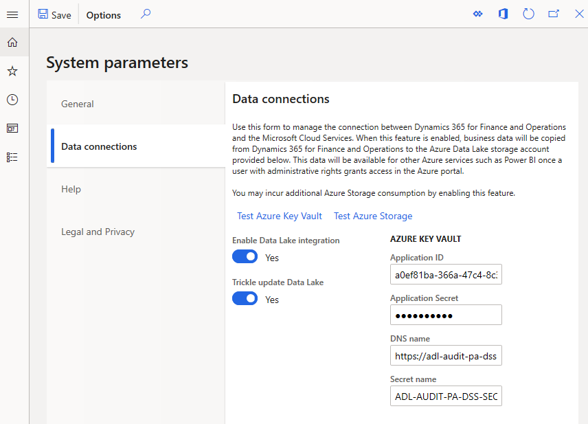
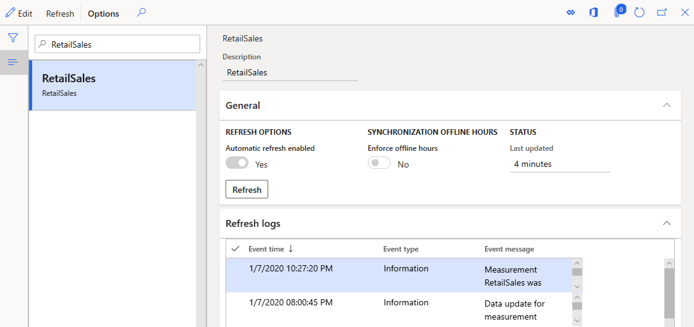

Azure Data Lake Storage in einer Dynamics 365 Commerce Umgebung aktivieren
Important
Dynamics 365 Retail ist jetzt Dynamics 365 Commerce und bietet umfassende Handelsfunktionen für alle Kanäle – von E-Commerce über Shops bis hin zu Callcentern. Weitere Informationen zu diesen Änderungen finden Sie unter Microsoft Dynamics 365 Commerce.
In diesem Thema wird das Aktivieren und Testen von Azure Data Lake Storage für eine Dynamics 365 Commerce-Umgebung erläutert. Dies ist eine Grundvoraussetzung für die Aktivierung von Produktempfehlungen.
Übersicht
Bei der Dynamics 365 Commerce-Lösung werden alle Produkt- und Transaktionsinformationen im Entitätsspeicher der Umgebung nachverfolgt. Um diese Daten für andere Dynamics 365-Dienste wie Datenanalyse, Business Intelligence und personalisierte Empfehlungen zugänglich zu machen, muss die Umgebung mit einer kundeneigenen Azure Data Lake Storage Gen 2 Lösung verbunden werden.
Da Azure Data Lake Storage in einer Umgebung konfiguriert ist, werden alle erforderlichen Daten aus dem Entitätsspeicher gespiegelt, während sie weiterhin geschützt sind und vom Kunden gesteuert werden können.
Wenn Produktempfehlungen oder personalisierte Empfehlungen auch in der Umgebung aktiviert sind, erhält der Produktempfehlungsstapel Zugriff auf den dedizierten Ordner in Azure Data Lake Storage, um die Kundendaten abzurufen und Empfehlungen basierend auf diesen zu berechnen.
Voraussetzungen
Kunden müssen Azure Data Lake Storage in einem Azure-Abonnement konfiguriert haben, dessen Inhaber sie sind. Dieses Thema behandelt nicht den Kauf eines Azure-Abonnements oder die Einrichtung eines Azure Data Lake Storage fähigen Speicherkontos.
Weitere Informationen zu Azure Data Lake Storage finden Sie in der offiziellen Gen2 Azure Data Lake Storage-Dokumentation.
Konfigurationsschritte
Dieser Abschnitt behandelt die Konfigurationsschritte, die zum Aktivieren von Azure Data Lake Storage in einer Umgebung erforderlich sind, und bezieht sich auf Produktempfehlungen. Eine ausführlichere Übersicht über die zum Aktivieren von Azure Data Lake Storage erforderlichen Schritte finden Sie unter Stellen Sie den Entity Store als Data Lake zur Verfügung (This is an external link).
Aktivieren Sie Azure Data Lake Storage in der Umgebung
- Melden Sie sich beim Back-Office-Portal der Umgebung an.
- Suchen Sie nach Systemparameter und navigieren Sie zur Registerkarte Datenverbindungen.
- Setzen Sie Integration von Data Lake aktivieren auf Ja.
- Setzen Sie Data Lake schrittweise aktualisieren auf Ja.
- Geben Sie die folgenden erforderlichen Informationen ein:
- Anwendungs-ID // Anwendungsschlüssel // DNS-Name – Erforderlich, um eine Verbindung zu KeyVault herzustellen, in dem der Azure Data Lake Storage Schlüssel gespeichert ist.
- Schlüsselname – Der geheime Schlüssel, der in KeyVault gespeichert und zur Azure Data Lake Storage Authentifizierung verwendet wird.
- Speichern Sie Ihre Änderungen in der oberen linken Ecke der Seite.
Das folgende Bild zeigt ein Beispiel für eine Azure Data Lake Storage Konfiguration.

Testen Sie die Azure Data Lake Storage Verbindung
- Testen Sie die Verbindung zu KeyVault mit dem Link Azure Key Vault testen.
- Testen Sie die Verbindung zu Azure Data Lake Storage mit dem Link Azure Storage testen.
Note
Wenn die Tests fehlschlagen, überprüfen Sie noch einmal, ob alle oben hinzugefügten KeyVault-Informationen korrekt sind, und versuchen Sie es dann erneut.
Sobald die Verbindungstests erfolgreich sind, müssen Sie die automatische Aktualisierung für den Entitätsspeicher aktivieren.
Gehen Sie folgendermaßen vor, um die automatische Aktualisierung für den Entitätsspeicher zu aktivieren.
- Suchen Sie nach Entitätsspeicher.
- Navigieren Sie in der Liste auf der linken Seite zum RetailSales-Eintrag, und wählen Sie Bearbeiten aus.
- Vergewissern Sie sich, dass Automatische Aktualisierung aktiviert auf Ja gesetzt ist, und wählen Sie Aktualisieren und dann Speichern aus.
Die folgende Abbildung zeigt ein Beispiel für einen Entitätsspeicher mit aktivierter automatischer Aktualisierung.

Azure Data Lake Storage ist jetzt für die Umgebung konfiguriert.
Ist die Konfiguration noch nicht vollständig, befolgen Sie für die Umgebung die Schritte Produktempfehlungen und -personalisierung aktivieren.
Zusätzliche Ressourcen
Entitätsspeicher als Data Lake zur Verfügung stellen (This is an external link)
Überblick über Produktempfehlungen
Produktempfehlungen aktivieren
Personalisierte Empfehlungen aktivieren
Personalisierte Empfehlungen kündigen
Die Empfehlungen „Produkte mit ähnlichem Aussehen kaufen“ aktivieren
Produktempfehlungen in POS hinzufügen
Empfehlungen dem Transaktionsbildschirm hinzufügen
Anpassung der Ergebnisse der AI-ML-Empfehlungen
Manuell kuratierte Empfehlungen erstellen